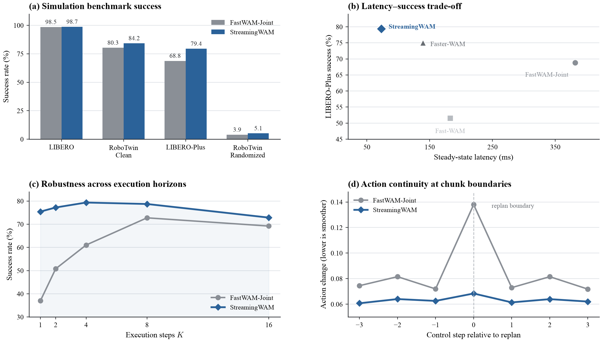
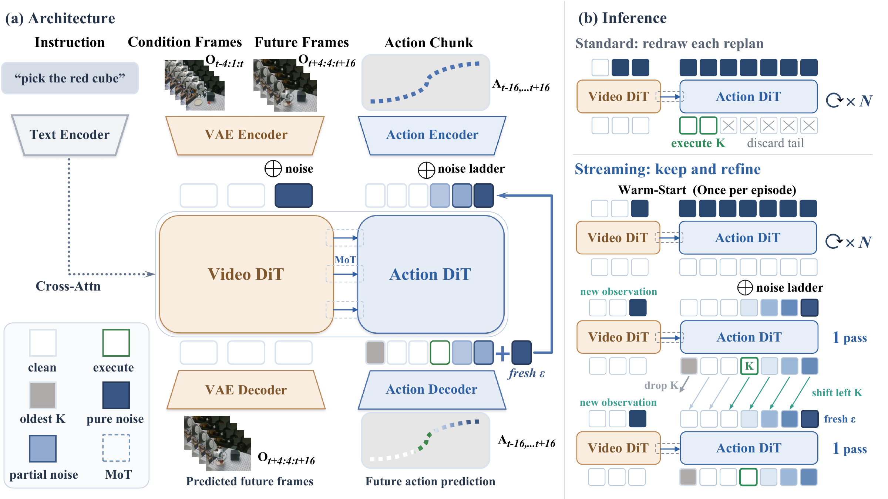
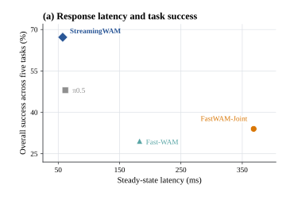
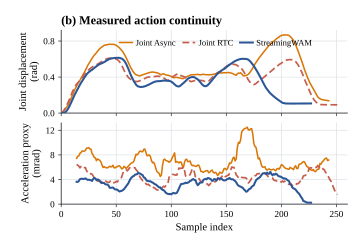

Simulation results and analysis
StreamingWAM improves benchmark success while reducing steady-state latency, remaining stable across execution horizons, and smoothing action-chunk transitions.

Streaming World Action Modeling via
Chunk-Wise Staircase Flow Matching
World Action Models (WAMs), often built upon pretrained video-generation world models, have emerged as a promising framework for general-purpose and open-ended robot control. However, their real-world deployment often suffers from discontinuous and jerky execution. Existing methods typically address this issue by either improving inference efficiency or enhancing action continuity across prediction chunks, without jointly addressing both challenges. To bridge this gap, we propose StreamingWAM, a streaming-diffusion framework for WAM-based robot control. StreamingWAM combines a noise ladder for chunk-wise action prediction, a prefix rollout module for cross-chunk continuity, and dense video-history memory for temporally consistent conditioning. Experiments on LIBERO, LIBERO-Plus, RoboTwin 2.0, and real-world robotic tasks demonstrate that StreamingWAM improves action continuity across static and dynamic settings, achieving competitive performance with the lowest steady-state replanning latency among the evaluated WAMs using the same backbone. The method also produces smoother action transitions and faster steady-state replanning, while the streaming staircase reduces sensitivity to the execution horizon K.

StreamingWAM combines a staircase noise schedule, a clean action prefix, and dense visual history to turn chunk-wise diffusion into a rolling control process.

Simulation and real-robot results are presented with matching latency and action-continuity analyses.
StreamingWAM improves benchmark success while reducing steady-state latency, remaining stable across execution horizons, and smoothing action-chunk transitions.

Per-task success, response latency, and action continuity are summarized here; closed-loop task comparisons and qualitative evidence follow below.

The first view connects response time with aggregate success, while the second separates overall movement from abrupt changes. Task-level closed-loop comparisons and motion-prediction evidence follow below.


A continuous four-trial sequence is featured first, followed by three static and three dynamic real-robot tasks.
Original 1× playback. Every video on this page is shown at its recorded speed, without speed-up or slow-motion processing.
The presentation view is shown at full size; the three synchronized policy views are concatenated alongside it in the same order used by the model.
Six tasks grouped by whether the target remains fixed or changes during execution.
The two tasks with the clearest gains are shown first as closed-loop policy comparisons. Select a trial and camera view to compare all three policies; brief task-level interpretations and supporting motion-prediction evidence follow the rollouts.
The closed-loop conveyor videos above show the behavioral difference. To examine one plausible source, we compare future-frame predictions at a matched task stage: StreamingWAM predicts motion along the conveyor, whereas FastWAM-Joint predicts little displacement. This supports the interpretation that dense temporal history helps the WAM infer target motion, while remaining qualitative evidence rather than a controlled history-only ablation.
| Method | Predicted displacement | Observed displacement | Direction cosine |
|---|---|---|---|
| FastWAM-Joint | 1.38 px | 6.93 px | 0.497 |
| StreamingWAM | 9.66 px | 5.93 px | 0.995 |
Code is hosted on GitHub; simulation and real-world model checkpoints and the demonstration dataset are hosted on Hugging Face.